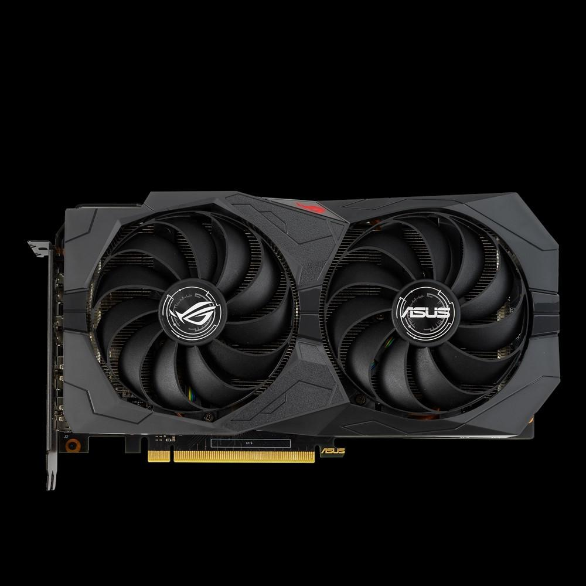
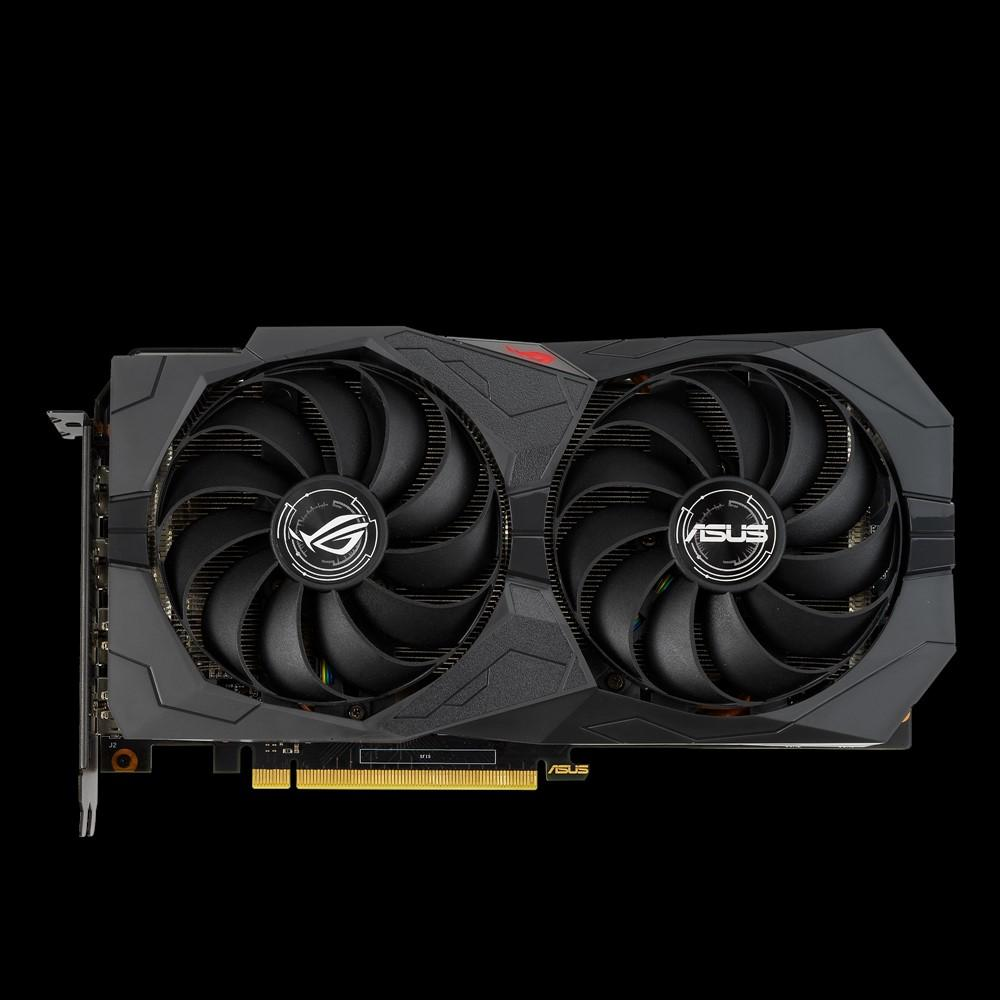

Grafikos plokštę "HD 7970: techninė harakterisitki ir atsiliepimai
2020.10.29 12:41
Sveikata Paprastumas Maisto ir gėrimų Naujienos ir visuomenė Formavimas Menai ir pramogos Keliaujantis Namai ir šeima Kompiuteriai Grožis Verslas Intelektinės plėtra Automobiliai Sportas ir laisvalaikis Hobis Teisė Technologijos Mada Lėšos Santykiai Savarankiškai auginimas Maistas ir gėrimai
Kompiuteriai , Įranga
Grafikos plokštę HD 7970: techninė harakterisitki ir atsiliepimai
Vaizdo korta nieko naujo Aukštos Pabaiga klasė, nes gamintojai suprato, kad už gerbėjų balsų dauguma žaisti daug išteklių kompiuterinių žaidimų naujos kartos vaizdo išvesties į pirmąją vietą. Tai tik iš prietaiso kaina gali sustabdyti galimą pirkėją. Norėdami pritraukti dėmesį yra tarpiniai modifikavimo įtaisus, kuriais siekiama aukščiausio lygio produktų rinkos segmento, tačiau jų kaina yra žymiai mažesnė nei bendraamžių.
Šiame straipsnyje mes daugiausia dėmesio bus skiriama vieną iš šių žaidimų kompiuteriams - vaizdo plokštės HD 7970 iš gerai žinomo prekinio ženklo, kuris pastatė savo sprendimą dėl lustų AMD. Pagrindinis uždavinys gamintojo buvo sumažinti vaizdo išlaidas, išlaikant tinkamą žaidimo našumą.
vertas konkurentas
Kai jis ateina į Nvidia produktus, už prieinamą kainą, vienas nustato, kad gamintojas siūlo cut-žemyn versiją savo flagmano GeForce Titan, tai gali būti vertinama lyginant įrenginių lustai ir studijuoti savo architektūra. Bendrovė AMD gali pasiūlyti tą patį metodą udeshevlonnye modifikacija mikroschemų Radeon R9, tačiau neturite tai. Grafikos plokštę HD 7970 gavo visiškai naują platformą su modernių technologijų naudojimo, kad pranoko našumo visi konkurento siūlomas toje pačioje kainų intervalas (15-20 rublių) prietaisais.
Tas faktas, kad rezultatas buvo vertas žaidimų įrenginys už prieinamą kainą, galite spręsti pagal prietaisus, grindžiamus šiuo chipsetu gausa. Visi žinomi vaizdo plokščių gamintojai pradėjo išvestį remiantis AMD Radeon HD 7970. rinkoje pirkėjas gali aptikti net keletą pakeitimų iš to paties gamintojo - tai padorus skaičius daugeliui vartotojų.
Originalioje pakuotėje
Įperkamos kaina rinkoje vaizdo plokštės prietaiso suteikia 28 nm technologiją su GTT architektūros, turi prieinamas tik vieną grafikos branduolys (visi viršų prietaisai yra du iš jų). Dėka šiuolaikinės technologijos, gamintojas įdiegta HD 7970 lustu maždaug 4,3 mlrd tranzistoriai.
Grafikos branduolys yra clocked 925 MHz, bet kaip mes tikri savininkai savo nuomones, tai yra minimalus skaičius, kuris lengvai padidina, tai būtų padorus aušinimo. ĮRENGINIAI Tekstūros vienetų 128 ir 32 ROP. Atminties veikia esant 1375 MHz (efektyvaus 5500) dažniu, turi 3 GB apimties ir bendrauja su kompiuteriu per 384 bitų magistralę. Beje, laive turi pinout įdiegti papildomą atmintį, todėl mes galime tikėtis naujų produktų iš gamintojų su 6 GB laive (ir galbūt su 512 bitų magistralės).
Aukštos kokybės vaizdo lėmė padidėjusios energijos sąnaudos - 250 W iki didžiausios apkrovos yra labai primena Nvidia konkurentas produktai. Gana keista matyti AMD produktų, tokių išteklių reikalaujančių klausimų (prieš ribos yra iki 130 W).
Overclocked
Po grafikos kortelių rinkoje tendencija, gamintojas nusprendė sukurti patobulintą keisti savo prietaiso reikliems vartotojams (NVIDIA seniai naudojamas tokią schemą su pakeitimais kūrimo «Ti»). HD vaizdo plokštė 7970 GHz Edition buvo parduoti forma distiliuoto nuo: grafikos branduolys veikia esant 1050 MHz dažniu, o vaizdo atmintis 1500 MHz (6000 MHz). Verta pažymėti, kad gamintojas yra įvesta daugiau jokių pokyčių: tikimasi padidinti pajėgumus daugiau nei 384 bitai, ir padidinti atminties talpą iki 6 GB atsitiko. Padidėjęs kaina atskirai. Kaip ekspertai savo nuomones, pirkimas bus aiškiai neracionalus, nes konkurento produktą prefiksas «Ti» unikaliai priskirti prietaisus su didesnio atminties pralaidumo.
Išvaizda ir aušinimo
Vis dėlto, atėjo momentas, kai montavimo AMD žaidimų prietaisas reikalauja erdvų aptvarą standartas bokštas ATX. Po adapteris ilgis yra 38 cm, ir ji užima du lizdus sistemos blokas, aiškiai teigia trečią padoraus suvartojamų aušinimo orą. Elementai PCB dedamas kompaktiškai aplink GPU įdiegta atminties lustų ir elektros elementų nėra išsibarstę aplink prietaisą perimetrą, ir atsargiai lituojamas į vieną vienetą.
Vaizdo plokštė remiasi Radeon HD 7970 AMD lustas turi patogią požiūrį į aušinimo sistemą. Aliuminio radiatorius skyrių yra kietas ir apima du trečdaliai plokštės, jo pagrindas yra pagamintas iš vario, kurioje nustatyta, geriau šilumos perdavimą iš šildymo elementų. Iš vaizdo plokštė uodega įdiegta prekės Turbofan. Visa aušinimo sistema sandariai uždarytas su apsauginiu gaubtu, kuris neleidžia šildomą orą atgal į korpusą, ir iškrauti į išorę per barų nuo montavimo blokas.
pigus sprendimas
Pigiausias Rusijos rinkoje HD 7970 grafikos plokštę, atsiliepimai, iš kurių yra teigiamas pobūdį, atstovaujamos gerai žinomas Taivano prekės ASUS. Pirmą kartą per pastaruosius metus gamintojas nebuvo įdiegti savo aušinimo sistema, remdamasi gamintojo. Apskritai, ASUS kompanija labai nustebino savo gerbėjus pateikdama įrenginį vertas komplektas: visi adapteriai rūšių monitorių, skirstytuvo prijungti maitinimą, CrossFireX tiltas prijungti kelis vaizdo plokštės.
Išoriškai ASUS vaizdo plokštė skiriasi nuo pirminio produkto AMD tik užrašas ant radiatoriaus korpuse, todėl visi vartotojo dėmesį ties techninių charakteristikų įrenginiu. Pateiktas ASUS GPU Tweak programa, turi viską, dedamas į savo vietą: Didžiosios pagreitį, rodo aukštos kokybės grafikos plokštę, tai yra pagrindinis gamintojas orumą. Grafikos branduolys rodo stabilų veikimą esant 1200 MHz, ir atminties modulis iš esmės nėra Kaitinimas prie 1635 MHz (6500 MHz) dažniu.
ledinis šviežumas
Grafinis adapteris Radeon HD 7970 Jo, kaip visada, pritraukia klientus prie savo produktų išskirtinis išvaizda ir padoraus aušinimo sistema. Deklaruotas triukšmo lygio 15 dB gamintojas tikrai nėra rinkodaros gudrybė, nes bendrovė technologija yra visiškai pakeitė vaizdo plokštės maitinimo sistemą nustatant PWM valdiklis jos pačios gamybos ir didinant etapų skaičių.
Aliuminio radiatoriaus apima visą paviršių spausdintinės plokštės ir persmelkia su vario vamzdžių, kurie yra mažinti, šerdies ribojasi su grafikos branduolys rezultatas. Į viršų montuojamas metalinis apsauginis rankovėmis su dviem dideliais gerbėjų mažu greičiu yra labai veiksminga sukurti galingą oro srautą, galintį greitai pašalinti šilumą iš kaitinimo elementų.
Gamykloje nustatant HD dažnis 7970 šerdis yra 1050 MHz, o atmintis veikia ne 1400 MHz, tačiau vartotojai pranešė savo nuomones, šie skaičiai yra nieko, palyginti su įsijungimas potencialas: 1125 MHz core ir 1575 MHz, atminties suteikia didelį efektyvumą žaidimų.
Tipiškas modelis patikimo gamintojo
Bet Safyras įmonė nusivylęs savo gerbėjų, nes gamintojas tiesiog paėmė AMD HD 7970 produktą ir prie jo pridedamų lipduką ant įrenginio korpuso. Natūraliai, jokių papildomų modifikacijos ant PCB nebuvo padaryta. Ji atkreipia dėmesį į prietaisą rinkai tik jo kaina (15000 rublių), kuris yra prieinamos daugeliui gerbėjų dinamiškų žaidimų.
Standartinė įsijungimas nieko nauja šerdies ir 1200 MHz, bet atminties rodo stabilų veikimą 1785 MHz (7140 MHz veiksminga). Gana geras pasirodymas bandymų programų ir žaidimų nustelbė aušinimo sistemos darbą. Matyt, stipri šildymas iš pagrindinių ir atminties lustų leidžia turbo ventiliatorius veikia didžiausia galia.
skubiai reabilitacijos
Matyt supranta savo klaidas, Sapphire kompanija nusprendė skubiai rekonstruoti ant vaizdo plokštės rinkoje. Rinkodaros pristatė du produktus: Video Radeon HD 7970 Vapor-X ir Toksiška leidimas, kuris buvo parduoti du variantai kiekvienas: trijų ir šešių GB RAM laive. Tai visai kitas reikalas - mes matome iš karto, kad rimtai markės pirkėjas.
Modifikacija davė visą maitinimo sistemą: buvo įdiegta 8 + 2 etapus, kurie žymiai sumažinto energijos suvartojimo vaizdo. Verta pažymėti, kad gamintojas nustatė nuosavybės galios valdiklius ir pakeisti visą PCB į SSD talpa. Vario gamybos gailima: radiatoriaus bazę, ir vamzdžio dalis šilumos nuvedimui yra pagamintas iš šio netauriojo metalo.
Padoraus aušinimo - bet kurio pagreičio sėkmingas. Grafikos branduolys rodo stabilų darbą ne iš 1250 MHz dažniu, o atmintis veikia puikiai ant 1600 MHz. Dėl papildomos įsijungimas potencialas yra, bet kaip tik yra triukšmas dviejų mažų ventiliatorių.
tylus monstras
Powercolor kompanija gana keista elgiasi vaizdo plokštės rinkoje. Vienas serijos prietaisų, kuriuos ji parduoda gamyklos aplinkoje, o kitas - apskritai ignoruojami, o trečiasis suteikia ypatingų galių. Grafikos plokštę HD 7970, kurio atskleidimas galima rasti beveik visose kompiuterių žurnalai, nusipelno ypatingo dėmesio pirkėjų, mes kalbame apie vandens aušinimo. Iškart reikia pažymėti, kad vandens blokas yra ne nemokamai, o prietaisas surinkimo pirkėjui turės mokėti apie 25.000 rublių (beveik tas pats yra AMD lustas flagmanas).
Pasak ekspertų, jų peržiūros, vandens aušinimo sistema, kurią grafikos plokštę pateikta, yra stipriai primenantis Zalman WaterBlock garsaus prekės ženklo, ir tapatybės principo veiksmų. Taigi, iš darbo efektyvumo klausimas neturėtų būti, kaip su aušinimo mazgą. Yra nustatytas priedų nurodymas, ir net raktas.
Natūralu, kad toks monstras lengvai pasiduoti skirstytis, nes vandens aušinimo efektyvumas yra žymiai didesnis, prapūtimo oras. Grafikos branduolys veikia stabiliai už 1290 MHz, o vaizdo atminties susidoroti su dažnio 1750 MHz (7000 veiksmingai).
dvigubo whammy
Malonu gerbėjai ir XFX kompanija pristatė į rinką tik dvi modifikacijos HD 7970. Lustų rinkinys Apžvalga nebrangiai prietaisas neturėtų net pradėti, nes atsižvelgiant gamykloje grafikos plokštę gamintojas padarė tvirtą graviravimas ant prietaiso korpuso ir atnešė produktą į rinką. Maža kaina, be jokių modifikacijų - gana skirtingai nuo rimtų ženklą.
Bet antra XFX prietaisas bus įdomu Overclockers, nes gamintojas leido sau pakeisti maitinimo tiekimo sistema ant grandinės plokštės vaizdo. Firminis valdikliai etapas galios valdymo blokas, jos pačios gamybos ir daugelį kitų pokyčių lustas žymiai sumažinti elektros energijos suvartojimo grafiką. Su aušinimo sistema išrasti naują dviratį ne, suteikiantį aušintuvo įtaisas, kuris yra ant viršų greitintuvo R9.
Visų naujovių rezultatas buvo veiksmingą vaizdo adapterio įsijungimas grafikos branduolys dažnį 1200MHz. Atminties rodo stabilumą 1700 MHz. Splendid parametrai įrenginio, kurio temperatūra yra palaikoma lygi maždaug 70 laipsnių Celsijaus.
Iš už veiklos rezultatus lenktynes
MSI pristatė į rinką produktą, pavadintą HD 7970 Lightning. Pagrindinis bruožas šios kortelės yra patentuotas aušinimo sistema. Gamintojas neužsiėmė baigia PCB, pasitikėdami visiškai AMD technologiją, ir praleido visą savo laiką veiksmingą šilumos išsklaidymo sistemos sukūrimo.
Aliuminio bazė apima PCB būstą iš abiejų pusių - sprendimas yra gana keista, nes prietaiso galinėje neturi galios komponentus. Visą perimetrą grafikos plokštę yra įdiegta aliuminio radiatorius su vario vamzdžių, kurie yra sumažintas iki kontaktiniu plotu, tiek grafikos branduolys. Tose vietose, kur gerbėjų aliuminio montavimo grotelės šiek tiek supjaustyti aukščio, kurti mažas skyles į aušintuvai įrengimas (miglotai primena GAINWARD Phantom). Kaip rezultatas, pagreitis galima pasiekti stabilų veikimą grafikos lustas esant 1190 MHz dažniu, o atmintis - 1650 MHz.
užbaigiant
Rusijos rinkoje yra daug produktų, sukurtos HD 7970 šerdies, bet pagreitis efektyvumas yra toks mažas, kad nėra prasmės dažyti savo orumą. Apžvalgoje pateikiama įrenginį, kuris bus įdomūs Pirkėjo Vadovas perkant arba mažą kainą arba didelį potencialą įsijungimas. Auksinis reiškia pastaraisiais metais iš mados.
Similar articles
Kodėl ne Yota?
Kompiuteriai
Tabletė nėra įkraunamas. savidiagnostikos
Kompiuteriai
Vartai, numatytasis, nėra : kaip nustatyti?
Kompiuteriai
Kaip atsisiųsti į atminties kortelę į Android programų ir failų
Kompiuteriai
Intel procesoriais. veiklos įvertinimas pagal LGA1151 platformos
Kompiuteriai
Kaip atstatyti iPod
Kompiuteriai
Trending Now
Jogurto nauda
Sveikata
Hepatito B virusas - kas tai? Kaip gydyti hepatitu B?
Sveikata
Receptų kopūstų pyragas, kiaušiniai. Funkcijos virimo kopūstų pyragas
Maisto ir gėrimų
Tualetas dangtis - tai nereiškia, kad klaidą su pasirinkimu?
Namai ir šeima
Tikroji tema žiemos laikotarpiu - baterija sėdėjo, ką daryti?
Automobiliai
Kas yra mokyklos laikraščio pavadinimas aktualus šiuolaikinėje mokykloje
Formavimas
Newest
Narkotikų Veroshpiron , - instrukcijos, indikacijos ir šalutinis poveikis
Sveikata
Sėjos sėklų daigų vasario mėn. daigų auginimas: terminai, sąlygos
Paprastumas
Vaikams Mezgimas Šalikai: schemą. Kaip susieti vaikų šalikas nerti
Hobis
Plūdės juda. Ilgos tvarsčiai su stumdomomis plūdės
Sportas ir laisvalaikis
Ilja Muromets: Trumpa biografija vaikams, studentams, 4 klasės
Formavimas
Kodėl yra goosebumps ?
Sveikata
Copyright © 2018 lt.atomiyme.com. Theme powered by WordPress.
- Kas yra integruota grafikos plokštė?
- Skirtumas tarp atskiros ir integruotos grafikos kortelės ...
- grafikos plokštės
- Vaizdo Plokštės GeForce, Radeon. Vaizdo Plokste Internetu ...
- NAUJOS GRAFIKOS PLOKŠTĖS ĮDIEGIMAS! - ŽAIDIMAI(2020)
- Grafikos plokštę "HD 7970: techninė harakterisitki ir ...
- Vga grafikos plokštės aprašymas - Įranga - 2020
- 10 geriausių kompiuterio grafikos plokštės 2018 m - Žmonių ...
- Kaip sužinoti, kokią grafikos plokštę turiu? („Windows 10 ...
- Grafikos kortelių reitingas - palyginimų sąrašas 2020
- Kas yra integruota grafikos plokštė?
Papildomi būdai sužinoti, kuri grafikos plokštė naudoja „Windows“ Be jau aprašytų metodų, „Windows 10“, „8“ ir „Windows 7“ yra papildomi sistemos įrankiai, leidžiantys gauti informaciją apie vaizdo plokštės modelį ir gamintoją, kuris kai kuriais atvejais gali būti naudingas (pvz., Jei administratoriui neleidžiama ...
- Skirtumas tarp atskiros ir integruotos grafikos kortelės ...
Pavyzdžiui, integruota "Intel" grafikos plokštė sunaudoja ne daugiau kaip 15 vatų. Todėl temperatūros režimas yra švelnesnis - galite sumažinti triukšmingų ventiliatorių skaičių sistemos vienete. Trečia, linijų skaičius ir ilgis mažėjaSistemos autobusas naudojamas bendrauti su kortele, todėl galite gauti aiškesnį vaizdą ...
- grafikos plokštės
Žinant, kokią grafinę plokštę turite kompiuteryje su „Windows 10“, labai svarbu, nes per šią informaciją galite atsisiųsti, įdiegti ir atnaujinti reikalingus tvarkykles. Grafinė kortelė, vaizdo plokštė arba vaizdo plokštė yra pagrindinė ir esminė kompiuterio sudedamoji dalis, nes ji yra atsakinga už visų kompiuterio ir visų jį valdančių programų grafinių (ty ...
- Vaizdo Plokštės GeForce, Radeon. Vaizdo Plokste Internetu ...
Norint pakeisti grafikos plokštę, pirmiausia reikės atidaryti kompiuterio dėžę, išimti senąją ir įdėti naują plokštę. Tačiau prieš įsigyjant naują techninę įrangą labai svarbu žinoti, ar Tavo kompiuteryje yra naudojama „PCI Express“ grafikos plokštė, ar senesnė AGP.
- NAUJOS GRAFIKOS PLOKŠTĖS ĮDIEGIMAS! - ŽAIDIMAI(2020)
Kokia žaidimų vaizdo plokštė? Gera vaizdo plokštė 616 peržiūros Patugali atsakė į klausimą Birželio 24 2020 Pramogos ir laisvas laikas žaisti žaidimų kortelė Grafika kortelė grafikos plokštės kompiuterio surinkimas
- Grafikos plokštę "HD 7970: techninė harakterisitki ir ...
PC grafikos kortelės; Grafikos kortelių reitingas. Grafikas, kuriame lyginamos geriausių kompiuterio grafikos plokščių charakteristikos. Naujausia „Gforce“, „RX Radeon GPU“ greitis, palyginti su reitingu. Sužinokite, kuri darbalaukio vaizdo plokštė yra greičiausia. 2020-01-31
- Vga grafikos plokštės aprašymas - Įranga - 2020
HD vaizdo plokštė 7970 GHz Edition "buvo parduoti forma distiliuoto nuo: grafikos branduolys veikia esant 1050 MHz dažniu, o vaizdo atmintis 1500 MHz (6000 MHz). Verta pažymėti, kad gamintojas yra įvesta daugiau jokių pokyčių: tikimasi padidinti pajėgumus daugiau nei 384 bitai, ir padidinti atminties talpą iki 6 GB atsitiko.
- 10 geriausių kompiuterio grafikos plokštės 2018 m - Žmonių ...
Specialiosios ir integruotos grafikos kortelės yra dviejų tipų grafikos plokštės. Pagrindinis skirtumas tarp dviejų yra tas, kad integruota grafikos plokštė yra įmontuota į kompiuterį. Kadangi speciali grafinė plokštė yra išorinis priedas, kuris turi būti prijungtas prie pagrindinės plokštės.
- Kaip sužinoti, kokią grafikos plokštę turiu? („Windows 10 ...
Gigabyte GeForce GTX 1050 2GB grafinė plokštė 4, 4 žvaigždutės, 907 atsiliepimai "Tai buvo mano pirmoji grafikos plokštė kada nors, ir nuoširdžiai, kad žaidimų, kuriuos galiu žaisti tokioje spalvingoje kokybėje, skaičius mane visiškai gąsdina.
- Grafikos kortelių reitingas - palyginimų sąrašas 2020
Pradinio lygio vaizdo plokštė su geromis techninėmis specifikacijomis ir labai demokratiškomis sąnaudomis yra NVidia GeForce GT 610. Šio gaminio, jo parametrų ir galimybių ypatumai bus išsamiau nagrinėjami.
Papildomi būdai sužinoti, kuri grafikos plokštė naudoja „Windows“ Be jau aprašytų metodų, „Windows 10“, „8“ ir „Windows 7“ yra papildomi sistemos įrankiai, leidžiantys gauti informaciją apie vaizdo plokštės modelį ir gamintoją, kuris kai kuriais atvejais gali būti naudingas (pvz., Jei administratoriui neleidžiama ...
Pavyzdžiui, integruota "Intel" grafikos plokštė sunaudoja ne daugiau kaip 15 vatų. Todėl temperatūros režimas yra švelnesnis - galite sumažinti triukšmingų ventiliatorių skaičių sistemos vienete. Trečia, linijų skaičius ir ilgis mažėjaSistemos autobusas naudojamas bendrauti su kortele, todėl galite gauti aiškesnį vaizdą ...
Žinant, kokią grafinę plokštę turite kompiuteryje su „Windows 10“, labai svarbu, nes per šią informaciją galite atsisiųsti, įdiegti ir atnaujinti reikalingus tvarkykles. Grafinė kortelė, vaizdo plokštė arba vaizdo plokštė yra pagrindinė ir esminė kompiuterio sudedamoji dalis, nes ji yra atsakinga už visų kompiuterio ir visų jį valdančių programų grafinių (ty ...
Norint pakeisti grafikos plokštę, pirmiausia reikės atidaryti kompiuterio dėžę, išimti senąją ir įdėti naują plokštę. Tačiau prieš įsigyjant naują techninę įrangą labai svarbu žinoti, ar Tavo kompiuteryje yra naudojama „PCI Express“ grafikos plokštė, ar senesnė AGP.
Kokia žaidimų vaizdo plokštė? Gera vaizdo plokštė 616 peržiūros Patugali atsakė į klausimą Birželio 24 2020 Pramogos ir laisvas laikas žaisti žaidimų kortelė Grafika kortelė grafikos plokštės kompiuterio surinkimas
PC grafikos kortelės; Grafikos kortelių reitingas. Grafikas, kuriame lyginamos geriausių kompiuterio grafikos plokščių charakteristikos. Naujausia „Gforce“, „RX Radeon GPU“ greitis, palyginti su reitingu. Sužinokite, kuri darbalaukio vaizdo plokštė yra greičiausia. 2020-01-31
HD vaizdo plokštė 7970 GHz Edition "buvo parduoti forma distiliuoto nuo: grafikos branduolys veikia esant 1050 MHz dažniu, o vaizdo atmintis 1500 MHz (6000 MHz). Verta pažymėti, kad gamintojas yra įvesta daugiau jokių pokyčių: tikimasi padidinti pajėgumus daugiau nei 384 bitai, ir padidinti atminties talpą iki 6 GB atsitiko.
Specialiosios ir integruotos grafikos kortelės yra dviejų tipų grafikos plokštės. Pagrindinis skirtumas tarp dviejų yra tas, kad integruota grafikos plokštė yra įmontuota į kompiuterį. Kadangi speciali grafinė plokštė yra išorinis priedas, kuris turi būti prijungtas prie pagrindinės plokštės.
Gigabyte GeForce GTX 1050 2GB grafinė plokštė 4, 4 žvaigždutės, 907 atsiliepimai "Tai buvo mano pirmoji grafikos plokštė kada nors, ir nuoširdžiai, kad žaidimų, kuriuos galiu žaisti tokioje spalvingoje kokybėje, skaičius mane visiškai gąsdina.
Pradinio lygio vaizdo plokštė su geromis techninėmis specifikacijomis ir labai demokratiškomis sąnaudomis yra NVidia GeForce GT 610. Šio gaminio, jo parametrų ir galimybių ypatumai bus išsamiau nagrinėjami.

 
